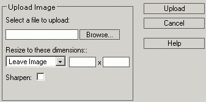

Om een bestand aan een webpagina toe te voegen, dient u eerst een afbeelding
te uploaden naar een externe server.

Schrijf het lokale adres van de afbeelding, of klik op de Browse knop om te navigeren door lokale folders en selecteer een bestand.
Gebruik het dropdown menu om een dimensie voor de afbeelding te kiezen. Om de afbeelding in de originele grootte te laten, selecteerd u "Leave Image". U kunt kiezen uit vooraf ingegeven waarden, maar u kunt ook zelf een waarde ingeven (door de "Custom" optie te kiezen). Het vergroten / verkleinen gebeurt door de breedte x hoogte verhouding in het oog te houden zodat u geen verstoorde afbeeldingen krijgt. Dit betekent ook dat zo nu en dan de afbeeldingen herberekend worden waardoor een licht verschillende waarde ontstaat.
Ten slotte, klikt u op de upload knop om uw selectie te bevestigen.